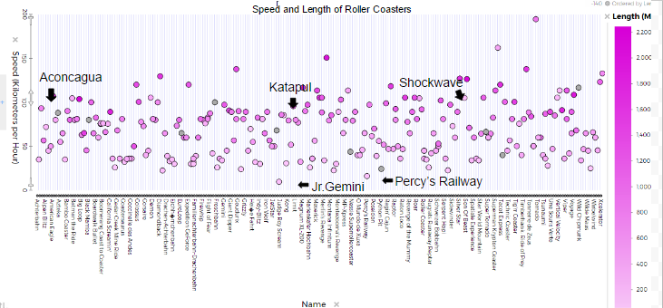
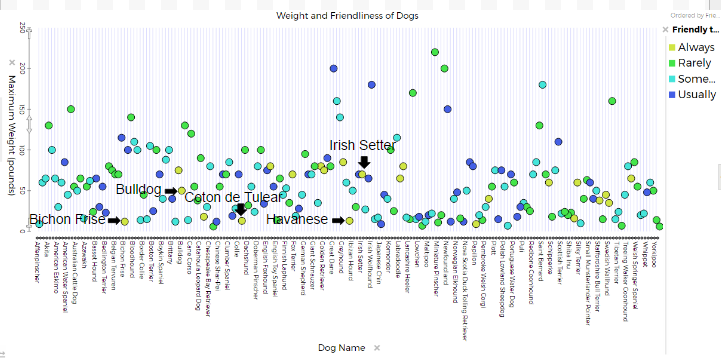
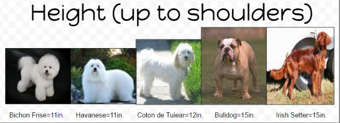
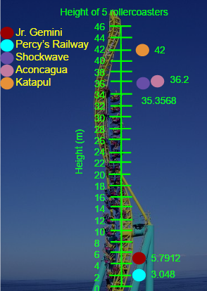

We chose 5 rollercoasters (Katapul, Shockwave, Jr. Gemini, Percy’s Railway and Aconcagua) and 5 dogs (Havanese, Irish Setter, Bulldog, Coton de Tulear and a Bichon Frise) to compare. Not all dogs will be allowed to ride the chosen roller coaster, just because they are unfit for any rollercoaster. The dogs needed to be small for the rides because that way they can't jump out, will be easier to control and get ride with their owner. The rides needed to be short, slow and have a low height so that they aren’t too scary for the dogs.
 Using tuvalabs, we found data on rollercoasters and dogs. We looked through the graphs and examined what the best attributes would be for the dogs and rollercoasters. We decided that for dogs they needed to be small in height (measured up to shoulders) and in weight, and must always be friendly to strangers. For the roller coasters the important attributes are the height, speed and length. Then we collected our data and turned it into graphs.
The most suitable rollercoaster for dogs is the Jr.Gemini, and the dog most suitable to ride it is the Bichon Frise. Jr.Gemini has a height of 5.7912 meters, a speed of 97.2 kilometers per hour and a length of 135.026 meters. The average height for the 5 roller coasters we examined was 24.4792 meters, the average speed was 60.324 kilometers per hour and the average length was 303.4972 meters. The range for the roller coasters’ height was 5.7912 meters to 42 meters, a difference of 36.2088 meters. The speed had a range of 9.72 kilometers per hour to 97.2 kilometers per hour, which creates a difference of 87.48 kilometers per hour. The range for the length of the roller coasters was from 106.68 meters to 1097.28 meters, making a difference of 990.6 meters. The Bichon Frise has a height of 11 inches, a weight of 12 pounds, and is always friendly to strangers. Out of the 5 dogs, the average height was 12.8 inches, the average weight was 31.6 pounds, the average health was fairly good and they were all friendly to strangers. The range for height in the dogs was 11 inches to 15 inches, a difference of 4 inches. The range of weight for the dogs was 12 pounds to 70 pounds.
The most suitable ride for the Bichon Frise is Jr.Gemini. It was the second lowest height (a difference of 2.7432 meters from Percy’s railway), but had the lowest speed and the second lowest length (a 28.32 meter difference from Percy’s Railway). We still thought that speed was more important than height and distance because if it goes slow, the height and distance of the ride wouldn’t be as scary for the dog.